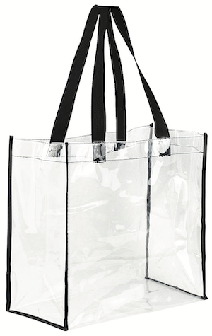

1. Scheduling visit
To schedule a visit, you will be making two phone calls to each family: the initial recruiting call and the confirmation call (if the family agrees to participate). Depending on the availability of the mother, you will complete the participant paperwork
1.1 Initial recruiting phone call (option 1/3)
- → If yes: end call.
In this study, we are currently looking for only-children. Would it be alright if we contacted you for other studies in the future? - → If no: continue
- → If not ENGLISH or SPANISH: end call.
To control for differences in communication, we are looking for families who speak mainly English or Spanish. Would it be alright if we contacted you for other studies in the future? - → If mainly English/Spanish: continue
- → If more than 4 weeks early: end call.
In this study, we are currently looking for children born on term. Would it be alright if we contacted you for other studies in the future? - → If born on term (37-41 weeks): continue
- → If yes: end call.
In this study, we are looking for typically developing children. Would it be alright if we contacted you for other studies in the future? - → If no: continue
- → If no to study or to sharing video on Databrary: end call
Okay, thank you. May we call you for other studies? - → If yes: continue
- → If the date they are available puts child out of age range: end call
For this study, we are interested in studying specific age groups: 12-, 18-, and 23-month olds. Would it be possible for us to contact you in XX months to see if [CHILD] can participate then? - → If dates are available when child is still within eligible age range: continue
- → If ready to answer now, continue:
- On your tablet, open Kobo toolbox and start a new questionnaire set
- Fill out participant information at top of new session
- “Save as Draft” after Phone Questionnaire and home visit questionnaires
- Only hit “Submit” after filling out clean-up notes back in lab
- List of questions on the Phone Questionnaire
- Please note that presentation and format will differ in the app.
- → If not available now
When will be a good time to call back about the questions? - If another time work, schedule a 5-minute call to complete phone questionnaire
- If difficult to find a time up to 2 days before visit, complete phone questionnaire when confirming visit
1.2 Initial recruiting voicemail (Option 2/3)
If you reach the family’s voicemail, please leave the following message:
1.3 Initial recruiting email (Option 3/3)
If you will be contacting the family over email, you may use the following template:
Dear [MOM],
I am writing from the [LAB] to tell you about a fun study that [CHILD] would be perfect for!
For this study, we are interested in learning about babies' natural, everyday experiences in their homes — such as the toys they play with and the places they go. A researcher will visit you and [CHILD] in your home, and the two of you will be video recorded as you go about your day. The visit lasts about 3 hours, and you will receive a $50 Visa gift card at the end of the session.
If you are interested in participating, would like more information, or have any questions, feel free to contact us by email or phone. Our phone number is [XXX-XXX-XXXX]. We look forward to hearing from you soon!
Thank you,
[LAB]2. Establishing visit details
Once you have connected with the family and decided on a visit date, please send the following email to establish the visit details:
Dear [MOM],
Thank you very much for agreeing to participate in our home visit study with [CHILD]. Here is a confirmation of the date and time of your appointment:
*Date: [DAY OF WEEK], [DATE]
*Time: [START TIME] – [END TIME]
Your Home Address: [ADDRESS]
We look forward to seeing you on the day of your appointment! If the above address is incorrect, please email back or call us right away. If you have any other questions about this appointment, feel free to contact us at [XXX-XXX-XXXX].
Thank you,
[LAB]3. Confirming a visit (day before the visit)
3.1 Confirmation phone call (Option 1/2)
- → If yes:
- → If phone questionnaire was not completed during initial phone call:
That’s great! Before the visit, I’d like to ask you a few questions. It will only take 5 minutes of your time. - On your tablet, open Kobo toolbox and start a new questionnaire set
- Fill out participant information at top of new session
- “Save as Draft” after Phone Questionnaire and home visit questionnaires
- Only hit “Submit” after filling out clean-up notes back in lab
- List of questions on the Phone Questionnaire
- Please note that presentation and format will differ in the app.
- Wrap up the call -
I will see you [date/time]. Just as a reminder, the data we collect from you now and during the visit, will be shared on a web-based library only available to researchers like the professor who runs this lab.
- → If phone questionnaire has been completed: -
That’s great! I will see you [date/time]. Just as a reminder, the data we collect from you now and during the visit, will be shared on a web-based library only available to researchers like the professor who runs this lab.
- → If phone questionnaire was not completed during initial phone call:
- → If no: rechedule, make sure that child will still be within age range
3.2 Confirmation voicemail (option 2/2)
If you reach the family’s voicemail, please leave the following message:
“Hi, this message is for [MOM]. My name is [NAME] and I’m calling from [LAB]. I’m calling about the home study visit we have scheduled for you and [CHILD] on [DATE] at [TIME]. Please call us back and let us know if that time and date still you works for you. Our phone number is [XXX- XXX-XXXX]. Thank you and we hope to hear from you soon!”
3.3 Confirmation email
If you have the family’s email address, it is always advisable to send a confirmation email. You may use the following template:
Dear [MOM],
Thank you very much for agreeing to participate in our home study with [CHILD]. Please let us know if this appointment still works for you! Here is a confirmation of the time and date of your appointment:
Date: [DAY OF WEEK], [DATE]
Time: [START TIME] – [END TIME]
Your Home Address: [ADDRESS]
We look forward to seeing you tomorrow! Please let us know if this appointment still works for you. If the above address is incorrect, please email or call us back right away. If you have any other questions about this appointment, feel free to contact us at [XXX-XXX-XXXX].
Thank you,
[LAB]4. Preparing for Visit
4.1 Pack
| Camera, SD card and extra battery |

|
Microphone with sponge cover |

|
|
| Fully loaded and charged tablet |

|
Laser Measure |

|
|
| Decibel meter mic |

|
Tripod for camera |

|
|
| Tote bag |  | Yoga mat |

|
|
| Dish set |

|
Toy |

|
|
| Binder with answer scales |

|
Paper backups of all questionnaires and forms |

|
|
| Participant payment |

|
4.2 Prepare
- Take your own water with you. For the duration of the visit, you will decline any offerings of food or drink.
- Take your university ID with you, be prepared to show it if asked.
- Dress plainly, modestly, neutrally. Nothing too bright and attractive to children. Try not to wear all black either :)
- Avoid strong perfumes and noisy jewelry. The idea is to blend into the background as much as possible.
- Be prepared to plan your bathroom breaks around the visit (it will be approx 2.5 hrs long).
Except where otherwise noted, content on this site is licensed under a Creative Commons Attribution 4.0 International (CC BY 4.0) license.